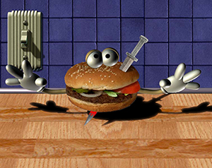
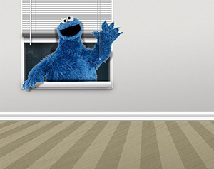

Ejercicio 1
Esta imagen fue una de las primeras que tuvimos que recrear utilizando Adobe Photoshop. La idea era aprender a utilizar
la varita mágica y la selección rápida para luego utilizar la máscara de capas y otros elementos. Asímismo, también nos enseñaron a crear una sombra y a hacerla realista.
Jugamos con los tamaños de las selecciones, aprendimos sobre capas y canales. Fue un ejercicio a modo introductorio del uso de la aplicación.
Más información sobre varita mágica

Ejercicio 2
En esta clase aprendimos a utilizar la herramienta máscara de capas, que es fundamental en cuanto al uso de Photoshop, toda selección
que se quiera realizar, es mejor hacerla con la máscara de capas. La misma te permite, en caso de tener un error, arreglarlo sin perder la imagen o los cambios previamente realizados.
Aprendimos sobre brillos y sombras para generar y transmitir realismo a la imagen. También, vimos las diferentes modalidades de pínceles que hay y
que podemos crear o añadir.
Más información sobre mascara de capas
Ejercicio 3
En este caso aprendimos a utilizar la mascara de capas junto con la selección, para cuando el borde de lo seleccionado es muy complejo. Por ejemplo el cabello de la actriz Evangeline.
Esta complejidad, sólo la puedo entender si comprendo como realizar un dibujo, manual o digitalmente. Para ello es importante saber sobre la representación gráfica.
Más información sobre representación gráfica